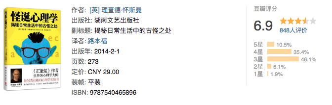

十二月、阅读、思考、实践、反思
子曰：“学而时习之，不亦说乎？有朋自远方来，不亦乐乎？人不知而不愠，不亦君子乎？”
很少会把一本书看完，经常是看到一半就看不下去了。是书不好，还是人不好？
一个投资家的二十年
点评：虽然无法完全借鉴，但是书中确是有不说真知灼见。重要是学习与参与，然后在实践中检验成果。不一定在股票上，在技术等其他方面，也是能够有一点的借鉴。
基督山伯爵
点评：只看了一半，喜欢看简练的文章，这种名著总是让我感觉冗余过度。前半部分看的觉得还算紧凑，后半部分就如裹脚布一样长了。三个火枪手也是只看了前半部分，看样子和大仲马无缘。
大型网站技术架构

点评：按照高并发、高可用、可扩展等多个维度娓娓道来，从整体出发介绍了方方面面，对入门分布式相关架构知识很有帮助。主要问题在于，过于泛，要想掌握还需要针对每个内容点，重新寻找更深入的学习资料深入研究。
微习惯

点评：此类书籍看了很多，就是为何对我不起作用。书中作者都说看得人都感同身受，觉得起了很大的改变。但我觉得这似乎是故意对自己的欺骗，可是我无法欺骗自己。
韭菜的自我修养

点评：大鱼吃小鱼，小鱼吃虾米。知识+谋略+坚持，韭菜也有春天。这本书看样子像是李笑来的辩解，不过还是挺有道理的。
深度思考 - 不断逼近问题的本质

点评：感觉书名取巧了，如果他要是写成某某某自传我是不会去看的。这本书可以让女性借鉴如何在职场上更进一步。但所谓的深度思考，逼近问题的本质缺少更加普遍的适应能力。
怪诞心理学

点评：并不觉得有多怪诞，只是比较有意思，关注的是一些平时不会关心的地方。按照我们平民百姓的说法，就是吃饱着撑了瞎想。不过还是挺有意思的。
腾讯传
点评：腾讯的历史，是中国互联网二十年的历史。书中可以看出商场就是战场，没有永恒的敌人，也没有永远的朋友。再大的公司也可能在危机面前瞬间坍塌。
本文作者：ZeroJiu
本文链接： https://www.freehacker.cn/reading/read-201812/
版权声明：本博客所有文章除特别声明外，均采用 CC BY-NC-SA 3.0 CN 许可协议。转载请注明出处！
温馨提示：开启科学上网访问本站，能获得更好的阅读体验，并启用Disqus评论功能和作者交流。